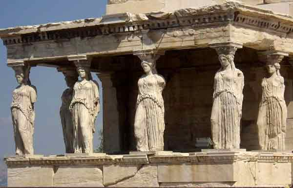
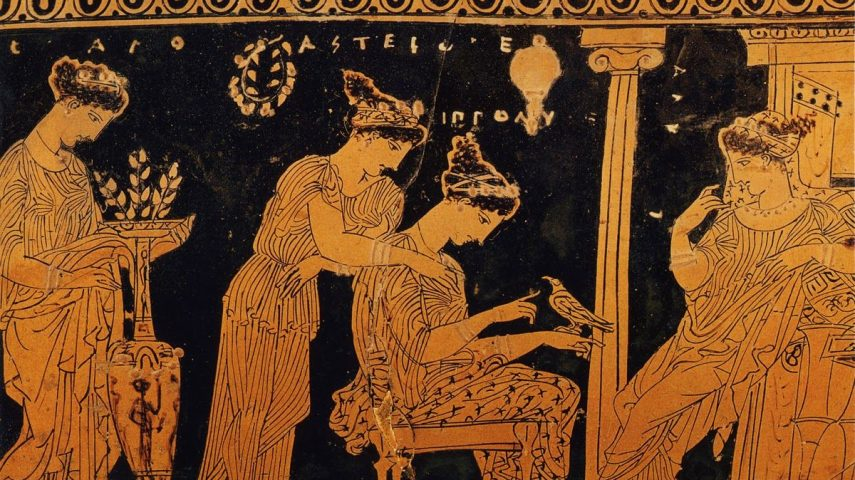

Apresentação sobre a Democracia na Grécia Antiga
Introdução ao tema
Definição de Democracia
A democracia é um sistema político onde o poder é exercido
diretamente pelo povo ou através de representantes eleitos.
O termo "democracia" vem do grego "demos" (povo) e "kratos" (poder ou governo).
ㅤ
Localização Histórica
O sistema democrático teve suas raízes em Atenas, uma das
principais cidades-estado da Grécia Antiga, que floresceu
culturalmente e politicamente entre os séculos VI e IV a.C.
ㅤ
Objetivo da Apresentação
Esta apresentação busca explorar a evolução da democracia em
Atenas, analisando os eventos e as figuras cruciais que moldaram
esse sistema político. Vamos examinar as reformas e os desafios
enfrentados, bem como o legado que essa forma de governo deixou
para as civilizações futuras.
ㅤ


O Contexto Histórico da Grécia Antiga
Cidades-Estado (Pólis)
A Grécia era composta por diversas pólis independentes, como Atenas, Esparta e Corinto.
Cada pólis tinha seu próprio sistema político, cultura e economia, o que resultava em uma
rica diversidade, mas também em rivalidades constantes.
ㅤ
Estrutura Social
A sociedade grega era estratificada. No topo, estavam os aristocratas, que controlavam
as terras e o poder político. Em seguida, vinham os pequenos proprietários e os
trabalhadores livres. Os escravos, que não tinham direitos, formavam a base da
estrutura social, sendo fundamentais para a economia.
ㅤ
Descontentamento Popular
Com o aumento da riqueza e a expansão do comércio, novas classes sociais começaram a exigir
mais poder político. O ressentimento contra a aristocracia cresceu, levando a revoltas e
clamores por reformas que permitissem uma maior participação nas decisões governamentais.
ㅤ

As Reformas de Drácon e Sólon
Drácon (621 a.C.)
Drácon foi um legislador que introduziu um conjunto de leis escritas, que eram um marco na
história jurídica da Grécia. Suas leis eram conhecidas por serem extremamente
rigorosas, com punições severas, muitas vezes incluindo a morte para crimes menores.
Embora seu código tenha sido criticado pela crueldade, foi um passo importante para a
transparência legal.
ㅤ
Sólon (594 a.C.)
Sólon foi nomeado arconte e encarregado de implementar reformas políticas e sociais.
Ele aboliu as dívidas dos camponeses e libertou aqueles que haviam sido escravizados
devido a dívidas. Sólon também criou uma nova estrutura social que dividia os cidadãos
em classes com base na riqueza, permitindo que os cidadãos mais pobres tivessem voz
nas assembleias. Ele estabeleceu o conceito de isonomia, que defendia a igualdade de direitos
para todos os cidadãos, independentemente de sua classe social.
ㅤ

O Governo de Pisístrato e a Tirania
Pisístrato (560-527 a.C.)
Pisístrato subiu ao poder através de um golpe de estado, mas governou com uma abordagem populista, adotando
políticas que beneficiavam as classes mais baixas. Ele promoveu a agricultura, redistribuiu terras e investiu
em projetos públicos que melhoraram a infraestrutura de Atenas.
ㅤ
Contribuições
Durante seu governo, Pisístrato estabeleceu festivais religiosos e culturais, como os Grandes Dionisíacos, que
celebravam o teatro e as artes. Essas iniciativas não apenas uniram a população, mas também fomentaram uma
identidade cultural atenienses.
ㅤ
Impacto
Seu governo, embora tirânico, estabeleceu bases para a participação política, já que muitos cidadãos começaram a se
envolver mais nas questões públicas. Essa experiência ajudou a preparar o terreno para as reformas democráticas que
viriam a seguir.
ㅤ
Clístenes e a Fundação da Democracia (508 a.C.)
Reformas de Clístenes
Clístenes é frequentemente chamado de "pai da democracia" em Atenas. Ele implementou reformas que reorganizaram a estrutura
política de Atenas, criando novas divisões territoriais chamadas de demos, que representavam as várias comunidades da cidade.
ㅤ
Criação dos Demos
Essa reorganização não apenas descentralizou o poder, mas também garantiu que diferentes grupos tivessem representação.
Clístenes também instituiu um novo sistema de conselhos e assembleias, onde cidadãos de diferentes classes podiam
participar e influenciar as decisões políticas.
ㅤ
Ekklesia e Boule
A Ekklesia era a assembleia popular onde todos os cidadãos podiam se reunir para discutir e votar em leis.
A Boule, composta por 500 cidadãos escolhidos por sorteio, preparava a agenda da Ekklesia, garantindo
que as questões mais relevantes fossem discutidas.
ㅤ
Ostracismo
O ostracismo era um mecanismo que permitia a exclusão temporária de cidadãos considerados ameaças à democracia.
Esse processo envolvia um voto popular e visava proteger a cidade de possíveis tiranos, refletindo uma
preocupação com a preservação do sistema democrático.
ㅤ
A Participação Cidadã
Cidadãos Elegíveis
A participação política em Atenas era limitada a homens livres nascidos de pais atenienses.
Aproximadamente 10-20% da população total tinha direito a voto, o que significa que as
mulheres, escravos e estrangeiros estavam excluídos do processo político.
ㅤ
Exclusões
Essa exclusão refletia uma visão restrita da cidadania, com a crença de que apenas os cidadãos
atenienses podiam contribuir de forma significativa para a polis. Embora houvesse algumas vozes
dentro da sociedade que clamavam por maior inclusão, a estrutura permanecia predominantemente elitista.
ㅤ
Sorteio e Rotatividade
Para evitar a concentração de poder, a maioria dos cargos públicos era preenchida por sorteio.
Isso promovia a ideia de que qualquer cidadão poderia participar do governo, independentemente
de sua posição social. Essa rotatividade era fundamental para garantir a diversidade de opiniões
e experiências nas deliberações políticas.
ㅤ
A Democracia Direta Ateniense
Diferença da Democracia Moderna
A democracia ateniense era uma forma direta, onde os cidadãos participavam ativamente da elaboração
das leis e decisões políticas. Isso contrasta com as democracias modernas, que são predominantemente
representativas, onde os cidadãos elegem representantes para tomar decisões em seu nome.
ㅤ
Ekklesia
A Ekklesia era o coração do sistema democrático, permitindo que cidadãos se reunissem para debater
e votar em questões cruciais. Cada cidadão tinha o direito de expressar suas opiniões e influenciar
a política, reforçando um forte senso de comunidade e responsabilidade cívica.
ㅤ
Participação Ativa
Os cidadãos eram incentivados a participar ativamente da vida política, com o entendimento de que
sua contribuição era vital para o funcionamento da polis. Esse envolvimento direto cultivou uma
cultura de debate e reflexão sobre questões cívicas, política e ética.
ㅤ

Período de Ouro de Péricles (século V a.C.)
Governo de Péricles (495-429 a.C.)
Péricles é uma das figuras mais emblemáticas da Atenas clássica, conhecido por seu papel na consolidação
da democracia e no desenvolvimento cultural da cidade. Ele liderou durante um período de grande esplendor
e influência para Atenas, tanto em termos políticos quanto culturais.
ㅤ
Investimentos
Sob sua liderança, Atenas investiu massivamente em infraestrutura pública, incluindo templos, teatros e
outras obras que simbolizavam o poder e a cultura da polis. O Parthenon, por exemplo, tornou-se um
símbolo do orgulho ateniense e da arte clássica.
ㅤ
Guerra do Peloponeso
A guerra entre Atenas e Esparta trouxe desafios significativos para a democracia.
Durante esse conflito, Péricles defendeu a democracia como uma forma de
resistência, mas a guerra também expôs fragilidades na estrutura política
de Atenas, levando a tensões e conflitos internos.
ㅤ
Declínio da Democracia Ateniense
Impactos da Guerra do Peloponeso
A guerra teve consequências devastadoras para Atenas, incluindo perda de vidas e recursos.
A prolongada guerra contra Esparta desgastou a estrutura política e social da
cidade, resultando em descontentamento e divisões internas.
ㅤ
Governos Oligárquicos
Após a derrota de Atenas, foram estabelecidos governos oligárquicos, que restringiram as
liberdades políticas e desfavoreceram a participação dos cidadãos. Esses regimes, que
frequentemente eram apoiados por forças espartanas, mostraram a vulnerabilidade da
democracia ateniense.
ㅤ
Restauração Temporária
Embora a democracia tenha sido restaurada em períodos posteriores, ela nunca recuperou totalmente
a força que tinha sob Péricles. O legado democrático de Atenas foi constantemente desafiado
por instabilidades políticas e o crescente poder de líderes autocráticos.
ㅤ
Legado da Democracia Ateniense
Influência Duradoura
A democracia ateniense é frequentemente vista como um modelo fundamental que influenciou o desenvolvimento
de sistemas democráticos modernos em todo o mundo. Os princípios de participação, igualdade e debate
público continuam a ser relevantes nas democracias contemporâneas.
ㅤ
Princípios de Participação e Igualdade
A noção de que todos os cidadãos têm o direito de participar nas decisões políticas é um pilar das democracias modernas.
As ideias de isonomia e isegoria, que promovem igualdade de direitos e oportunidades para todos
os cidadãos, são reflexos diretos do legado ateniense.
ㅤ
Inspiração Global
Os ideais democráticos de Atenas inspiraram movimentos políticos em diversas partes do mundo, como a Revolução Americana
e a Revolução Francesa. A luta por direitos civis e a participação popular em governos democráticos são um testemunho
do impacto duradouro da experiência ateniense.
ㅤ
Conclusão
Resumo das Contribuições
A democracia ateniense, com suas complexidades e contradições, foi um marco na história política da humanidade.
Embora tenha apresentado limitações significativas, especialmente em termos de inclusão, as ideias e práticas
que emergiram desse período são fundamentais para entender o desenvolvimento da democracia.
ㅤ
Legado
O conceito de democracia, como emergiu em Atenas, ainda ressoa nas sociedades contemporâneas.
A luta contínua por direitos, participação cidadã e igualdade é uma herança direta das
experiências e lutas dos cidadãos atenienses.
ㅤ